音と心で、本当の自分とつながる150分
Zoom・少人数・参加無料（通常45,000円）
無料で申し込む（Peatix）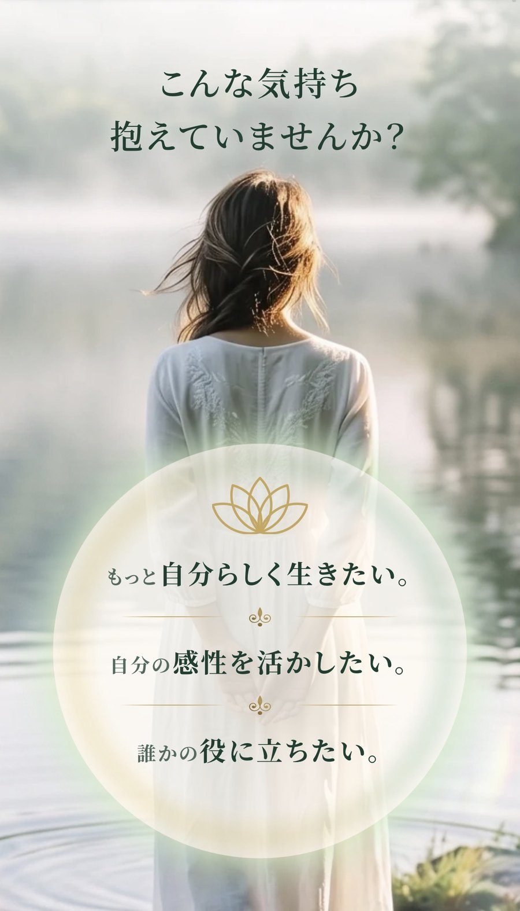
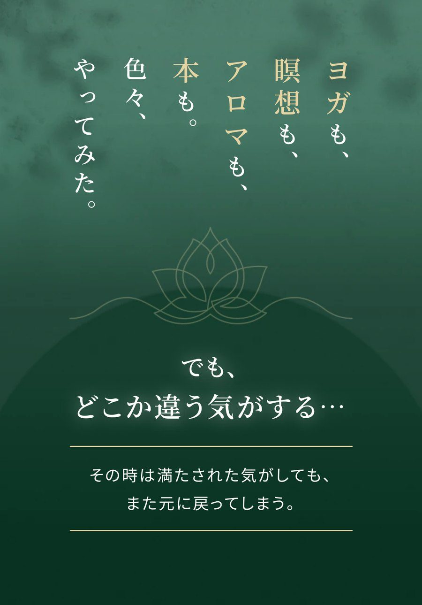
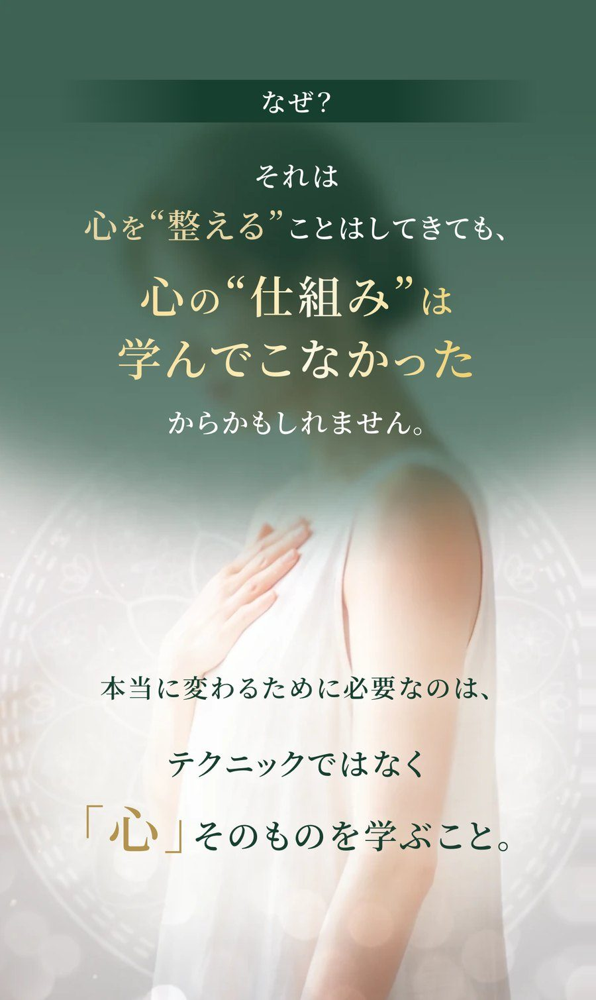
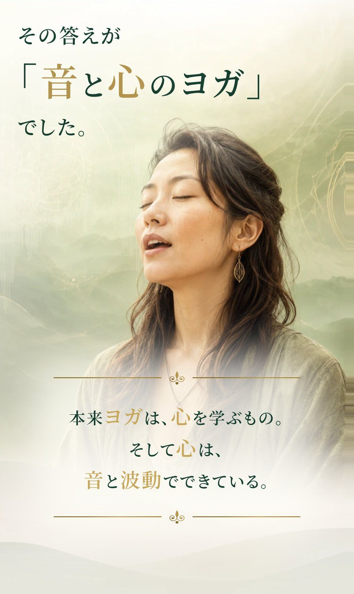
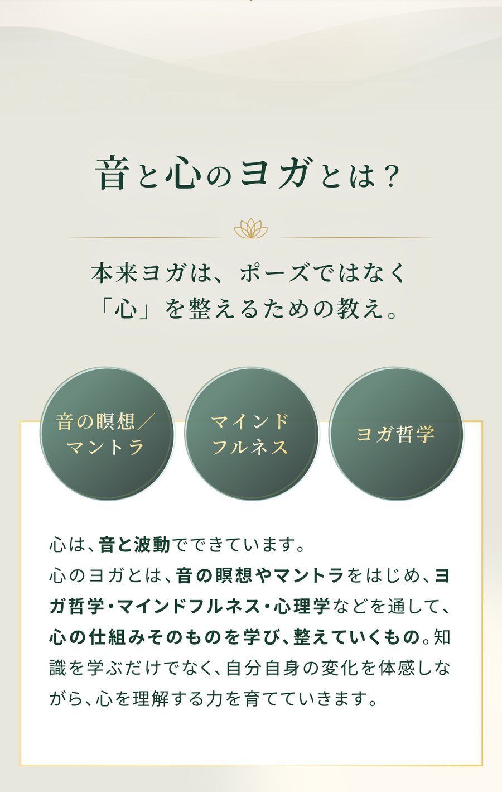
体験会では、
体のポーズは一切ありません。
心の仕組みを知って、
音で体感する時間です。
心の仕組みを、
少しだけのぞいてみませんか
体験会の映像より（約1分半）
いま聴いた声が、マントラです
サンスクリット語で「マン＝心」「トラ＝道具」。
本当の自分とつながるための、音の道具です。
当日の内容と流れ
当日、体験できる4つのこと
心と行動のしくみ
分かっているのに、動けないのはなぜ？
朝、服を選んで手に取るのも「心」。体は勝手には動きません。心が先に動き、体があとからついてくる。そのしくみを知ると、自分を責める見方が変わります。
あなたの心のタイプ
心配・イライラ・溜め込み。あなたはどのタイプ？
心の乱れ方には、3つのタイプがあります。自分の弱さではなく「タイプ」だと知ると、自分を見る目が少しやさしくなります。
音と心の関係
人間関係の「不協和音」は、どこから？
ヨガの教えの土台は「この世はすべて音である」。自分の音を少しチューニングし直すだけで、今の人間関係のままでもハーモニーは生まれます。
エゴと本当の自分
本当の自分と、どうつながる？
体を持つ「今の私」と、内側の奥深くに眠る「本当の私」。その2つをつなぐのがヨガ、つなぐ道具がマントラ。ハルモニウムの生演奏に合わせて、みんなで唱えて体験します。
当日の様子（約2分）
10/24の体験会の映像より
当日の流れ
心のヨガのお話
マントラ瞑想の体験
日常での続け方
ここで一度区切ります（ここまで約2時間半）
希望者のみ：コース案内と質疑応答（約30分）
※質問は、チャットでいつでも受け付けています。参加する方の関心に合わせて、内容や順番が一部変わることがあります。
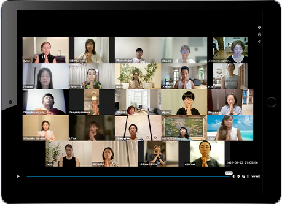
カメラ・マイクONでご参加ください。
少人数で、一緒に声を出して唱えるからです。
あなたが整うと、
関わる人との関係も変わる
家族や職場で、なぜか噛み合わない。
そんな人間関係の「不協和音」は、
相手だけのせいではないのかもしれません。
自分の音が整うと、相手も周りも変わらないままで、ハーモニーが生まれていきます。
心とつながった声は、
声だけで誰かの力になる。
誰かのために頑張ってきたあなたが整うことは、
まわりの大切な人にも届いていきます。
HEART OF SOUND とは
世界で初めて認められた
「心のヨガ」専門校
2015年
全米ヨガ
アライアンスが認定
世界初
心に特化したヨガの
トレーニング認定校
全米ヨガアライアンスは、世界で最も信頼のあるヨガの国際認定機関。ヨガの先生の多くが、ここの資格を持っています。その機関が、心のヨガに特化したトレーニングとして世界で初めて認めたのが、HEART OF SOUNDです。
感覚だけに頼らず、体系立てて学べる。
だから、ヨガ未経験でも安心して体験できます。
元バレエダンサー、シンガーソングライター。上場企業や行政のリーダー研修を担当するエグゼクティブコーチでもあり、声を解析する技術の開発も手がける。マントラや音と波動を、スピリチュアルに偏らず誰にでも分かる形で教える。インターナショナルヨガフェスティバルに毎年出演。
メディア掲載
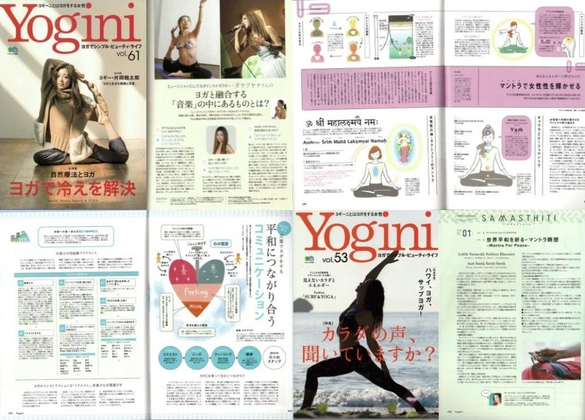
ヨガ専門誌『Yogini』で、アヤナさんのマントラや心のヨガが紹介されました。
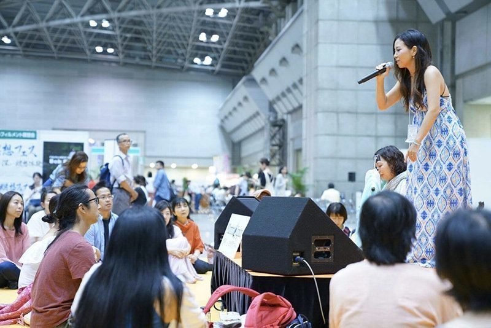
体験した人の声
参加者レビュー 97％が星5つ
いつのまにか前向きになってました
自分でも気づかないうちにマイナス思考になることが多かったのですが、体験に参加して、前向きになるために必要なことの本質を学べたと思います。
初めて本物のヨガに触れた感じ
心のヨガって本当に面白い！無料体験で心と音についてここまで知れるなんて、120％満足です。AYANA先生の知識の豊富さには脱帽でした！
たくさん気づきがあって有料級
無料体験のレベルじゃない！内容がめちゃくちゃ濃くて、自分では気づけない音の効果や心との関係性も分かって大満足です。
最初は半信半疑でした
マントラを声に出した瞬間、何かが変わる感覚がありました。（30代・主婦）
こんな方が参加しています
ヨガの経験は問いません
45,000円で開いていた体験講座を
いまは無料で。
誰もが気軽に、心をケアできる世の中にしたい。
その想いから、内容はそのままに開いています。
申込み特典
2つの無料プレゼント
体験会の前から、音と心の時間が始まります。
申込み後、メールでお届けします。
MESSAGE
主催者・ケントの想い
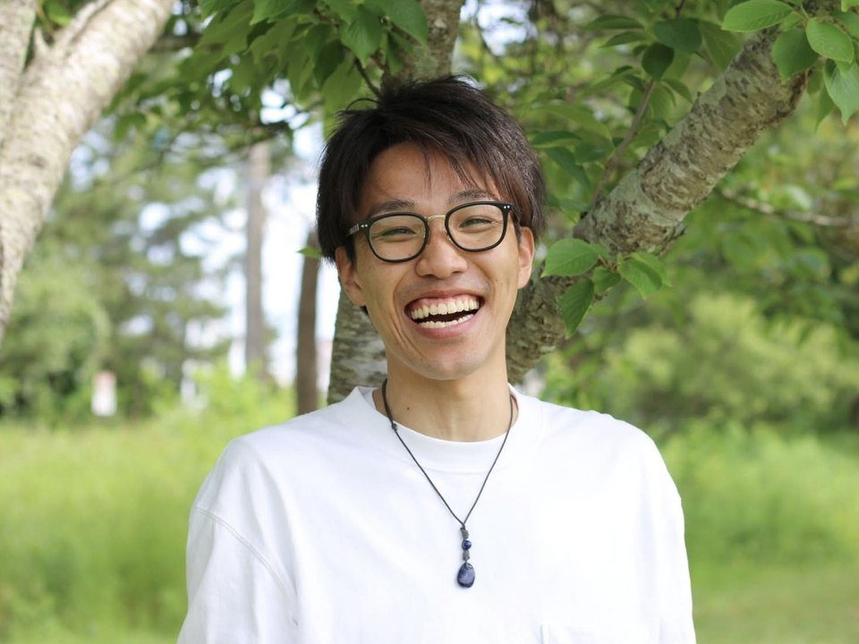
主催 倉谷 賢人（ケント）
こんにちは。
この体験会を主催する、ケントです。
普段は、評価やジャッジのない、
安心できる対話の場をつくってます。
人は安心できると、
深いところの自分とつながれる。
それを言葉にできた時、
本当の気持ちに気づける。
800人以上との対話の中で、
そんな瞬間を何度も見てきました。
だから僕は、
まず内側を整えることが先だって思ってます。
内側が変われば、
外で起こることも変わっていくから。
アヤナさんの体験会は、
頭で考えるより先に、
音で心がふっとゆるむ時間。
頑張ってきた自分に、少し優しくなれる。
忘れていた本当の自分を、思い出せる。
そんなきっかけになるかも。
画面越しに会えるのを、
楽しみにしてます。
よくある質問
Q. スピリチュアルな内容ですか？
A. 音の共鳴や、心と体の関係を、日常の例えを使って分かりやすくお伝えします。
Q. 参加したら、受講しなければいけませんか？
A. いいえ。体験ワークの後に一度区切り、コース案内は希望する方だけにお伝えします。内容を理解したうえで、ご自身で判断いただけます。
Q. オンラインでも、効果を感じられますか？
A. はい。マントラの音は画面越しでも十分に体感できます。海外から参加される方も多いです。
Q. ヨガは全くの初心者ですが大丈夫？
A. 大丈夫です。心のヨガなので、体のポーズは一切ありません。ゼロから楽しく学べて、初心者から講師になった方もいます。
Q. なぜカメラONなのですか？
A. 少人数で一緒に声を出して唱えるためです。トラブル予防のため録画しています。
Q. 家族がいる・声を出しにくい環境でも大丈夫？
A. 心の中で唱えたり、チャットで参加してもOKです。少人数のアットホームな会なので、お子さんがそばにいても大丈夫です。
Q. 内容は難しいですか？
A. 暗記はなく、体験を大事にします。自転車の乗り方のように、一生忘れない感覚が身につきます。
Q. 友達と一緒に参加できますか？
A. はい、大歓迎です。大切な人と一緒の参加も、おすすめです。
体験会の詳細
日程①
12/15（火）
21:00〜
日程②
12/20（日）
13:00〜
内容は両日とも同じです。会場はZoom、時間は約3時間（体験会 約2時間半＋希望者向けのコース案内・質疑応答 約30分）。
終了予定：12/15は24:00、12/20は16:00（体験だけの方は30分早く終了）
申込み方法：ボタンからPeatixへ → 日程を選んで無料チケットを申込み → Zoomの参加方法がPeatixから届きます。
無料で申し込む（Peatix） このページを友達に送る（LINE）大切な人と一緒の参加も、おすすめです
お問い合わせ：yoyaku@wisdom-tokyo.co.jp
心の学びを、
誰かの幸せにつなげたい方へ
HEART OF SOUNDでは、全米ヨガアライアンスの資格（RYT200）を目指せる200時間の指導者養成コースもあります。心のヨガ・マインドフルネス講師、サウンドヒーラー、ライフコーチとして活動する卒業生もいます。体験会の最後に、希望する方だけにご案内します。
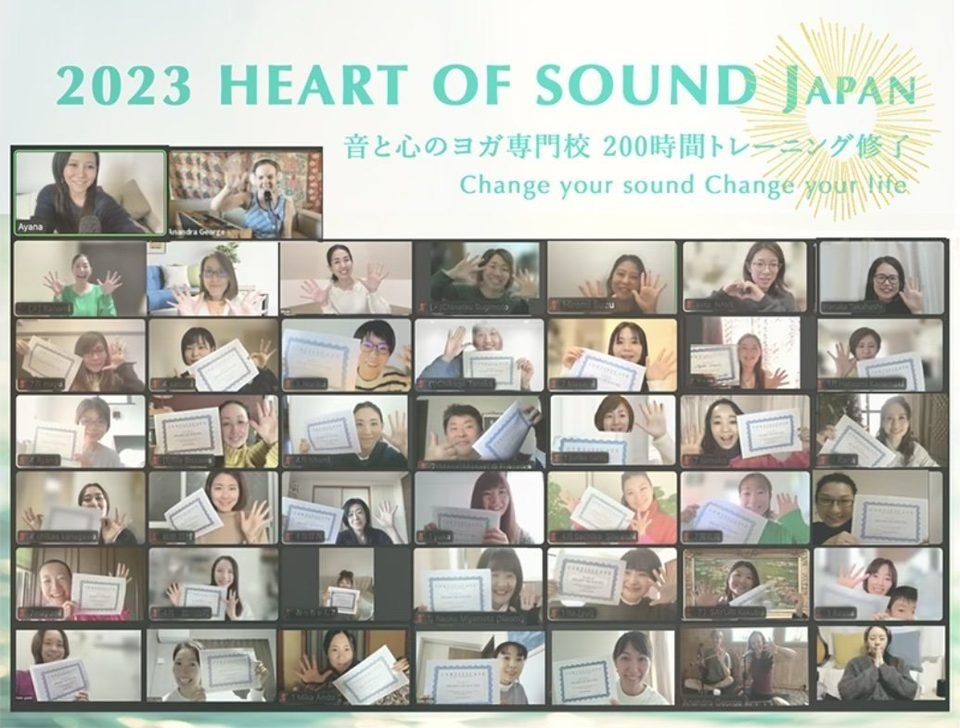
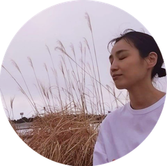
コニーさん｜30代・一児の母
元アパレル勤務 → ヨガ講師として活動
「いらないプライドを捨てることができ、様々な人に自分の感情を合わせながら、柔軟な対応ができるようになったことが本当に良かったです。」
佳奈美さん｜30代
石垣島でMeraYogaを創業、リトリートプランナー
「考え方も物の見方も変わり、誰かと比べて不貞腐れたり、自分なんてダメだという感情がなくなりました。」
Yunaさん｜20代・一児の母
心のヨガ・音の瞑想専門インストラクター
「産後の子育てや家事に追われ、どうせ無理だろうと諦めていました。……卒業後は、受講前に描いていた理想に近づく形で活動できています。」
音と心のヨガ 無料体験
12/15（火）・12/20（日）